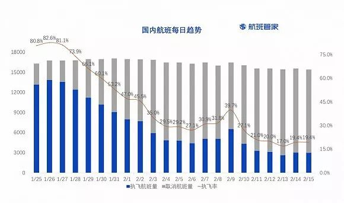
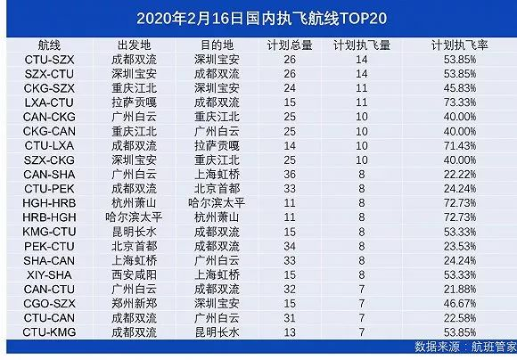

一千三百万张退票背后：曾有一万多人在客服电话中排队
原文链接 备份链接 *************▲*************疫情期间，人们不能移动，机票取消，使得国内航空公司不得不合并、取消多数航班。图为广州白云国际机场航站楼候机厅一角。（南方周末记者 冯飞/图） 全文共4406字，阅 …
记者 ：陈晓双
“
2月15日至23日，客流量将再减半，日均旅客预计不超过20万人次
”
从1月21日开始，民航局连续四次发布免费退票的政策。据统计，截至目前，中外航空公司共办理退票超过2000万张，票面金额超过200亿元。
据航班管家，目前国内航班每日执飞量仍在较低位，航班取消率超过80%。而北京首都—上海虹桥、上海虹桥—深圳宝安等热门往返航线在2月9日（正月十六）迎来一波小高峰后，航班量继续走低。


未来一段时间，民航客流量仍将面临下滑趋势。民航局副局长李健在国务院联防联控机制新闻发布会上介绍，从1月25日至2月14日，民航日均运输旅客47万人次，是去年同期的1/4。2月15日至23日，客流量将再减半，日均旅客预计不超过20万人次，客流量不足高峰时期的1/10，客座率不足40%。
民航专家林智杰此前对界面新闻介绍，2003年SARS时期旅客出行需求锐减，至6月底恢复时，国内旅客运输量下滑19%，飞机日利用率减少了1.9小时，相当于行业有五分之一的飞机停场。全年行业亏损28亿元。
未来三日，国内航空公司中，计划执飞航班量最多四家航空公司是南航、东航、国航和厦航。但日计划执飞量均不足400架次。

从目的地看，成都和重庆机场成为进出港航班量最多的目的地。据航班管家统计，2月16日，国内执飞航班量最多的航线是成都双流—深圳宝安、重庆江北—深圳宝安及拉萨贡嘎—成都双流。

去哪儿网的统计数据也显示，目前重庆和成都的旅客继续购票。同时一些二线城市，南充、泉州、长春等也位于继续购票城市的Top10。重庆、成都、哈尔滨等城市是近年春运期间的热门目的地城市。数据反映出，来自这些人口输出城市的刚需旅客选用快捷的航空交通出行。

与此同时，民航局积极组织21家国内航空公司参与保障运输任务。从1月24日至2月14日，国内21家国内航空公司共执行了紧急驰援武汉航空运输任务241架次，运送人员29364人。其中执行医疗运送任务181架次，执行海外滞留湖北籍旅客回国包机任务9架次，接回湖北籍旅客1185人，执行海外包机任务48架次，包括紧急物资的运输。

原文链接 备份链接 *************▲*************疫情期间，人们不能移动，机票取消，使得国内航空公司不得不合并、取消多数航班。图为广州白云国际机场航站楼候机厅一角。（南方周末记者 冯飞/图） 全文共4406字，阅 …
原文链接 备份链接 我想说，疫情当前，不光是我们一线工作人员，而是所有人都在努力。 口述 | 孙明沁 整理 | 应 琛 1月28日晚，记得那是一个雨夜，我刚刚登临检疫完一架航班，回到上海浦东国际机场海关值机处的办公地，在门口正好遇上两位 …
原文链接 备份链接 _ 随着疫情蔓延，春节前出国前往新加坡的湖北人挂念至亲，但是航空公司纷纷停飞，他们的回家之路几经周折后出现转机 _ 《财经》一线报道： 海外滞留旅客由中国包机抵达武汉现场 文 |《财经》记者 陈亮 刘以秦 编辑 | 施 …
原文链接 备份链接 【财新网】（记者 贾天琼）2月1日13:31，南方航空CZ30001航班执行包机从广州出发前往泰国普吉岛接滞留当地的湖北籍旅客，返回航班CZ30002将从普吉岛直飞武汉。 截至发稿，民航已部署5个航班，共接送湖北籍 …
原文链接 备份链接 关闭高速公路已是迫在眉睫，此前有因为自驾出游导致疑似感染的病例。截至1月23日下午14时，出武汉市的高速公路开始封闭 湖北省武汉市洪山区武鄂高速公路龚家岭收费站，已经堵车一个半小时 文 |《财经》记者 陈亮 李皙寅 王 …